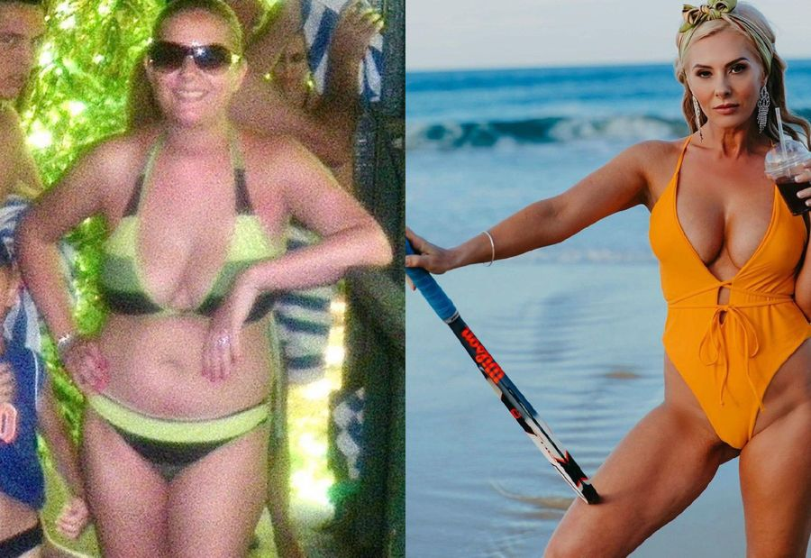

Нашата героиня днес се казва Мелания, тя успява да се откаже от пиенето и да започне нов живот след дългогодишна зависимост от алкохола. Оказва се, че Мелания е страдала от алкохолизъм поради загубата на любимия си съпруг през 2018 г. Тя разказа подробно на нашите читатели за своите проблеми.

Кореспондент: Здравей, Мелания! Всички се радваме да те видим! Изглеждате прекрасно!
Мелания: Благодаря ви, радвам се, че не ме забравяте!
- Кореспондент: Разкажете ни какво се случи? Била сте сериозно болна. Вярно ли е това?
Мелания: За съжаление, да, вярно е. Страдах от сериозно заболяване, нарича се алкохолна зависимост. Сега знам със сигурност, че това е болест, а не нещо друго. През 2018 г. загубих любимия си съпруг Думитру и животът ми се раздели на "преди и след". Започнах да удавям мъката си с алкохол, не излизах от къщи с месеци, не исках да общувам с приятели. Така отлетяха две години. Черният ми дроб и сърцето ми бяха силно увредени, а краката ми отказваха. Понякога ме взимаше линейка, за да ме "откара" по молба на приятелите ми, които, независимо от всичко, бяха до мен. Няколко пъти исках да се самоубия, но мислите за дъщеря ми ме спираха.
Алкохолът е лош, той е смърт, не знам какво щеше да стане с мен, ако нямаше приятели до мен. Най-вероятно вече нямаше да съществувам.
Един ден на рождения ми ден брат ми дойде при мен. Беше шокиран да ме види в такова състояние. Не се бяхме виждали почти година. Симон буквално ме принуди да отида до огледалото и да се погледна, че отново съм пияна и дори съм забравила, че е рожденият ми ден.
Погледнах се в огледалото и не можах да се позная. В отражението не бях аз, а един мръсен, подут, страшен алкохолик.
След това като че ли се опомних. Две години и половина отлетяха като месец. Не знаех кой ден е, коя е датата. Малко по малко се опомних едва когато дъщеря ми дойде в Лондон. По време на посещението ѝ се опитвах да се сдържам, но все пак се промъквах да пия, когато тя не гледаше.
Кореспондент: Как се измъкнахте от зависимостта? Сега всичко е приключило, нали?
Мелания: Направих често срещана грешка, която правят всички алкохолици - не исках да призная, че имам нужда от помощ - обещах на приятелите си, на семейството си и на себе си, че няма да пия. Но се оказа, че е по-лесно да се обещае, отколкото да се изпълни.
Не бяха минали и три седмици, откакто започнах да пия. В продължение на около шест месеца се опитвах да спра да пия сам, но нищо не ми помогна. Изобщо не исках да ходя в клиниката. Саймън не можеше да ме остави в това състояние, за което му благодаря. Той изнесе вещите си и дойде да живее при мен. Всяка сутрин ми приготвяше закуска, правеше ми вкусно кафе, извеждаше ме на разходка и, разбира се, следеше да не пия.
Но най-любопитното е, че аз не исках да пия! Сякаш той ме избави от зависимостта, нали разбирате! Разхождахме се много, говорехме си, дори забравих колко е прекрасно просто да се разхождаш с любим човек! Започнах да живея!
Отне ми около два месеца, докато се възстановя. За рождения ден на Саймън ми връчиха чаша шампанско. Но дори слабата миризма на алкохол ме накара да се почувствам толкова зле, че изтичах до тоалетната! Оттогава не съм се докосвала до алкохол.
И тогава Саймън ми призна, че е ходил на лекар тайно от мен и му е дал специално лекарство, което е сипвал в храната и кафето ми.
В началото беше шок! Бях сигурна, че сама съм спряла да пия! Но след това наистина погледнах на ситуацията си и осъзнах, че никога няма да се откажа сама.
Благодаря на брат ми и на д-р Елиаде, които ме спасиха.
Кореспондент: Д-р Силвиу Елиаде също ни даде интервю: Здравейте, д-р Силвиу. Преди всичко, много Ви благодаря за Мелания, за това, че днес я виждаме здрава и процъфтяваща! Разкажете ни защо е толкова трудно човек да се откаже сам от пиенето и защо зависимите никога не признават проблема си?
Силвиу: За съжаление, това е вярно, в повечето случаи пациентите ми не признават, че са болни. Мелания също дълго време не искаше да повярва в това. Пристрастяването към алкохола е именно болест и е почти невъзможно да се отървете от нея сами, без квалифицирана помощ.
Алкохоликът в семейството е голяма болка. Пиянството не само убива физическото тяло, но и унищожава личността. Това вече не е човекът, когото сте познавали и обичали. За този човек алкохолът вече е на първо място и всички други чувства, пристрастия, взаимоотношения губят смисъл. Алкохоликът е готов да "убие" за една бутилка. И това не е метафора, а истината за живота. Такива случаи, за съжаление, не са рядкост. Повечето престъпления се извършват под въздействието на алкохол.
А женският алкохолизъм, както знаете, по принцип се лекува трудно. Жените раждат болни деца, лишават се от родителски права, децата умират заради небрежността на пристрастените майки.
Първо страда мозъкът, а след това сърцето, черният дроб, бъбреците и други органи. Според статистиката хората, които пият повече от две години, не живеят и 10 години. По-често те умират от цироза на черния дроб, инфаркт, инсулт, бъбречна недостатъчност или алкохолно отравяне.
Кореспондент: Мелания, значи дори не подозирате, че сте се лекували?
Мелания:Не, нямах представа... Единственото, което е, че никога не съм излизала толкова лесно от запой. А след това, след няколко дни, се почувствах добре и вече не ме влечеше да пия. След като се почувствах по-добре, посетих няколко сеанса с психотерапевт, за да затвърдя резултата. Но мисля, че само психотерапията не е достатъчна, без специални средства нямаше да изляза от зависимостта.
Кореспондент: Решихме да разберем мнението на психотерапевта Марку Драгическу. Марку, как мислиш, само психотерапия ли е достатъчна при алкохолна зависимост или не може да се мине и без лекарства?
Marku: Мелания каза всичко правилно. Има различни случаи и етапи на алкохолизъм. Психотерапията не винаги помага, както и кодирането, "Торпедо", събирането на билки и каквото и да е друго. Много е трудно да се спре пиенето. Има редица причини за това:
1. Алкохолът уврежда невроните на мозъка, като изкуствено повишава нивата на допамина - "хормона на щастието" - и предизвиква алкохолна еуфория.
2. При редовна консумация на алкохол производството на този хормон се увеличава. Този процес е невидим за човека, затова повечето алкохолици не разпознават своята зависимост и отказват лечение.
3. Когато отказът от алкохола е принуда, а не самостоятелно решение, след известно време зависимият неизбежно започва да пие.
Кодирането и другите неща тук не работят. И защо да "изобретяваме велосипед", когато има съвременни и безопасни средства, които могат да ви избавят от алкохолната зависимост за кратко време. А след пълния курс можете да преминете през 10-15 сеанса психотерапия, за да затвърдите резултата.
Кореспондент: За какво средство за защита говорите?
Marku: “”. Лекарството, което братът слагаше в напитките на Мелания. Но по-добре да оставим колегата Силвиу Елиаде да разкаже за това.
Силвиу: Дори дадох на брата на Мелания “” - това е най-ефективното средство за лечение на алкохолна зависимост и освен това е абсолютно естествено, така че може да се използва у дома. Това са капки, които нямат нито вкус, нито мирис, така че могат да се добавят дискретно към храната или напитките.
Кореспондент: Какво представлява това средство и как действа?
Силвиу: “” е мощен комплекс от природни екстракти, събрани в ефективна формула. Гъбата Копринус предизвиква трайно отвращение към алкохола, като същевременно насища организма с аминокиселини и витамини, нормализира дейността на стомашно-чревния тракт и осигурява естествени ензими.
Екстрактът от желязно дърво спомага за елиминирането на токсините и продуктите от разграждането, прочиства кръвта, спомага за облекчаване на посталкохолния синдром. Тиноспора кордифолия има успокояващо действие върху нервната система и спомага за нормализиране на съня и апетита Мишият хвощ спомага за прочистване на черния дроб и бъбреците, предотвратява развитието на цироза.
Това е разработка, която се превърна в истинска сензация и получи голям брой награди на различни международни форуми. Благодарение на нея хиляди хора вече са се отървали от алкохолната зависимост и водят трезв и здравословен живот без алкохол. Можете да видите мои пациенти, които се отърваха от алкохолната зависимост с помощта на “”. Съгласете се, че това е една прекрасна трансформация. Бяха им необходими само няколко курса на “”, за да се откажат от зависимостта си, за да се отърват от нея завинаги и да водят напълно нов здравословен живот без алкохол.
Адриан. Той пие от повече от 10 години. Той се отървава от зависимостта си с помощта на “” и живее трезво в продължение на 2 години.
Сорина. Тя пие от повече от пет години. Връща се към нормалния си живот с помощта на “”. Намерила си е работа, омъжила се е, родила е дете.
Флавиу. Той пие от шест години. От три години изобщо не пие и започва собствен бизнес.

Богдан. Той пие почти 15 години след смъртта на съпругата си. Зависимостта е преборена с . Намерил си работа и живял трезво в продължение на три години.
“” работи на няколко етапа:
-
1. Прави ви трезви, премахва синдрома на махмурлука, блокира пост-алкохолната депресия.
-
2. Формира трайна непоносимост към алкохола на физическо и психологическо ниво.
-
3. Унищожава невронните връзки в мозъка, отговорни за пристрастяването.
-
4.Намалява агресията, облекчава апатията, подобрява психоемоционалното състояние.
-
5. Облекчава алкохолната интоксикация, възстановява дейността на телесните органи и системи.
-
6. Трайно лекува алкохолната зависимост, предотвратява рецидивите.
Ето защо повечето нарколози избират това средство като най-безопасното и най-ефективното. “” е ефективен при всички етапи на алкохолна зависимост и помага да се отървете от пиянството за възможно най-кратко време. При употребата на курса лекарството формира трайно отвращение към алкохола. Пациентът развива непоносимост към миризмата на алкохол, появява се рефлекс на повръщане и самият той вече не иска да се докосва до напитката.
Проучванията са доказали високата ефикасност на лекарството. Данните могат да се видят на екрана:
На конференцията представихме резултатите от проучването пред медицинската общност:
-
Елиминиране на пост-алкохолния синдром още през първия ден от приема - 100 %.
-
Непоносимост към алкохола в края на курса - 98%
-
Нормализиране на кръвното налягане - 95%
-
Нормализиране на съня - 100%
-
Нормализиране на психичното състояние - 98%
-
Подобряване на благосъстоянието - 90%
Кореспондент: Това е отлично средство, сигурен съм, че ще помогне на много хора да преодолеят зависимостта си от алкохола.
Силвиу Елиаде: За съжаление, “” вече не се предлага в аптеките. В момента всички тестове са преминали успешно, получени са всички необходими сертификати. Остава да преговаряме за цената. Но аптеките не са съгласни с обявеното от производителя количество, искат да определят твърде висока цена. Те могат да бъдат разбрани, аптеките са бизнес Затова, за съжаление, не мога да кажа кога ще започнат доставките за аптеките.
Но има и добри новини! Производителят “” участва в социалната програма "Трезва страна" и продава продукта чрез официален жребий. Всеки жител на страната, който е навършил 18 години, може да участва в жребия и да получи отстъпка. Не пропускайте тази възможност, не планирайте да повтаряте промоцията.
Внимание! Учените са установили, че август е най-доброто време за отказване от алкохолната зависимост. Благодарение на слънчевата активност клетъчният метаболизъм се подобрява 8 пъти и избавянето от зависимостта става по-бързо и по-лесно.
ВНИМАНИЕ: От промоцията от дистрибутора можете да се сдобиете с “” с отстъпка до 50%. За целта е необходимо да отворите кутията с отстъпка, да попълните формата за поръчка по-долу до г. (включително). Броят на промоционалните артикули е ограничен. Ще имате само два опита!
КОМЕНТАРИ: